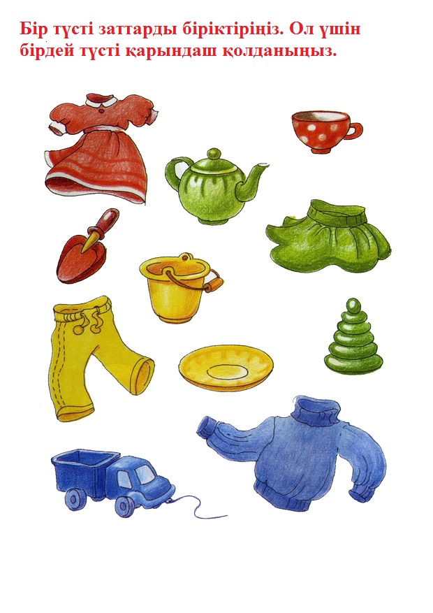
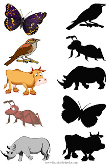
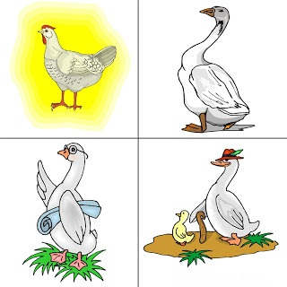
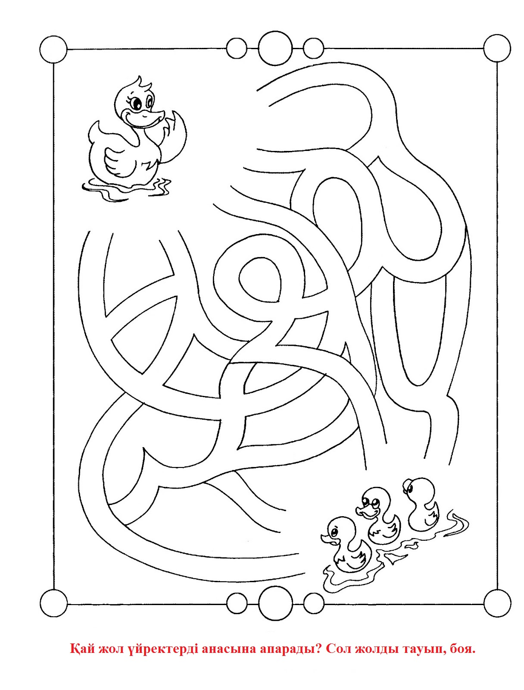
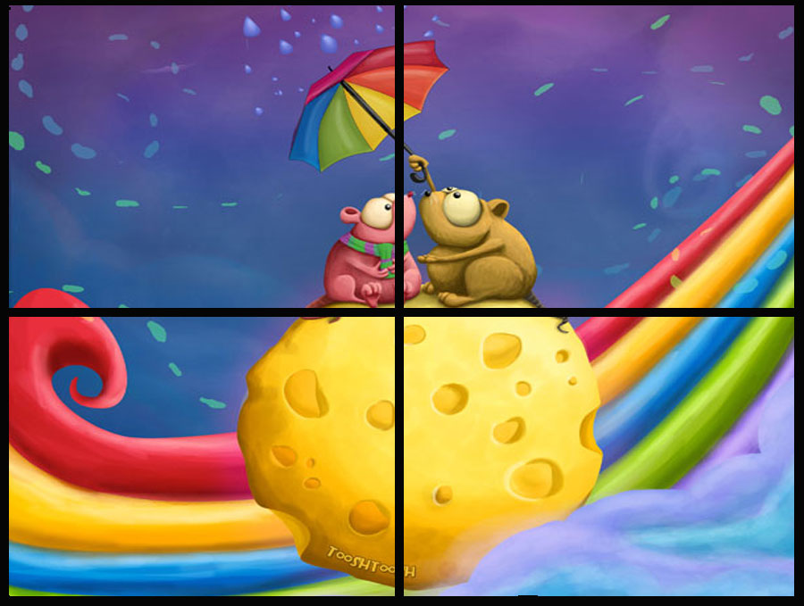

1. Логикалық ойлауды дамыту.
Егер сізді баланың дамуы қызықтырса-түстерді зерттеу үшін сабақ ұсынамын. Балаға ештеңе үйретудің немесе есте сақтаудың қажеті жоқ. Сабақты қызықты ойынға айналдыруға болады. Бес тапсырманы бір күн ішінде орындауға немесе бір аптаға ләззат беруге болады. Тек балаларыңызға кедергі жасамаңыз, балалардың өзіндік логикасы бар. Қуанышпен ойнаңыз!!!!

2. Көлеңкені тап.
Логикалық балалардың жұмбақтары. Суреттің көлеңкесін тауып, сызық сыз. Пазл - суреттен керекті көлеңкені табыңыз. Суреттер сабақтарының мақсаты-байқағыштықты дамыту. Сіз бір топ балалармен немесе бір баламен ойнай аласыз.

3. Артық затты тап.
Бүгін мен сізге ойын арқылы балаңыздың логикалық ойлауын қалай дамытуға болатынын айтамын. Бізге әдемі, әсем карточкалар көмектеседі. Бала үшін тапсырма: ұсынылған төрт суреттің артық суретін табу.

4. Лабиринт.
Сіздердің назарларыңызға балаларға арналған лабиринттерді ұсынамыз. Дамыту тапсырмаларын жүктеп, басып шығарамыз. Барлығы: 5 жұмбақ

5. Пазлдар.
Пазл-бұл бала үшін өте пайдалы және дамытушы ойыншық логикасы. Ең алғашқы пазлдар екі суреттен тұруы керек.Сіз кішкентай балаңызға ойыншық пазл жасай аласыз.Тек қана әдемі суретті журналдан кесіп, оны екі бөлікке кесіңіз. Міне, пазл дайын. Сіздің кішкентай балаңыз жай ғана екі суреттен пазлдарды жинайды, сіз суретті үш бөлікке, содан кейін төрт және т.б. кесуіңізге болады. Мен төрт суреттен тұратын ең кішкентай пазлдарды ұсынамын.